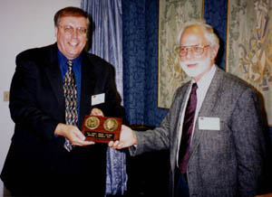

1999 Army Wilks Medal
Winner
Prof. Edward J. Wegman

Prof. Wegman receives the award from Dr. Launer
Professor Edward J. Wegman has been named the recipient of the 1999 Army Wilks Memorial Award. The award, commemorating the contributions of Samuel S. Wilks to statistical science in the Army, is given periodically to an individual who has contributed greatly to the theory and practice of statistics in Army research, development, and testing. Wegman was recognized "for fundamental work in mathematical and computational statistics, for conceptual innovation which has changed the direction and character of statistical research, for innovative problem solving in applied settings, and for continuing support of Army statisticians and scientists."
The plaque and honorarium were presented by the previous winner, Robert L. Launer of the Army Research Office, at a ceremony during the Army Conference on Applied Statistics, held at the United States Military Academy, West Point, New York.
Wegman is the Chair of the Department of Applied and Engineering Statistics
and the Director of the Center for Computational Statistics at George Mason
University.